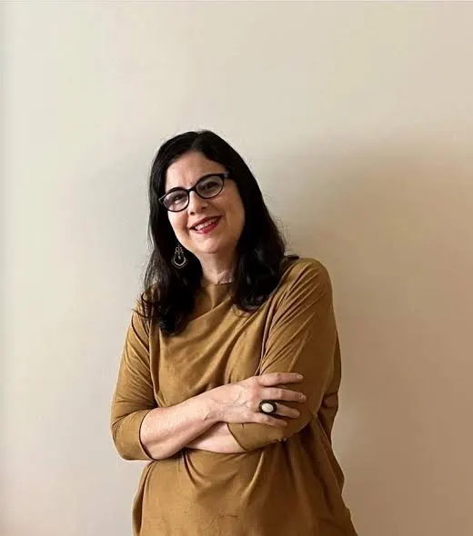

O Projeto
Histórico do Projeto
Esta base de dados está em processo de construção no âmbito do projeto de pesquisa “Espiritualidades africanas: práticas religiosas de origem africana no Império Português (séculos XVI-XVIII)”, coordenado pelo Prof. Dr. Alexandre Marcussi na Universidade de São Paulo, e do Núcleo de Estudos Inquisitoriais, coordenado pela Prof.ª Dr.ª Daniela Calainho na Universidade do Estado do Rio de Janeiro.
O projeto se iniciou em 2021, na Universidade Federal de Minas Gerais, com coordenação do Prof. Dr. Alexandre Marcussi e com o objetivo inicial de realizar um levantamento e indexação de fontes documentais que se referiam a práticas religiosas de origem africana nos Cadernos do Promotor da Inquisição portuguesa. Os Cadernos do Promotor são códices arquivísticos do fundo da Inquisição portuguesa, custodiados no Arquivo Nacional da Torre do Tombo, em Lisboa, que reúnem denúncias que foram arquivadas pelos tribunais inquisitoriais e que não deram origem a processos judiciais completos. Embora se estime que os Cadernos do Promotor contenham mais de 90% de todos os documentos inquisitoriais referentes a práticas religiosas de origem africana, eles nunca foram sistematicamente inventariados.
A primeira etapa do projeto, finalizada em 2022, consistiu em um inventário, a partir dos índices manuscritos disponíveis para os Cadernos do Promotor, de todos os acusados de origem africana e indígena, quaisquer que fossem os delitos (totalizando 1.063 indivíduos), bem como de todos os acusados de crimes de “feitiçaria”, independentemente de sua origem (totalizando 3.383 indivíduos). A partir daí, a pesquisa prosseguiu para a localização, transcrição e análise dos documentos correspondentes para a construção da base de dados.
Em 2023, foi estabelecida a parceria com um projeto do Núcleo de Estudos Inquisitoriais da UERJ coordenado pela Prof.ª Dr.ª Daniela Calainho, que visava compor uma base de dados contendo informações sobre os acusados de origem africana na Inquisição portuguesa, reunindo fontes já localizadas e analisadas pela historiografia que incluíam os Cadernos do Promotor, mas também outras tipologias documentais (como as visitações inquisitoriais e os processos). A partir dessa parceria e da ampliação do escopo e dos objetivos, a equipe optou por construir e disponibilizar publicamente a base de dados empregando as ferramentas da plataforma Heurist. O processo de construção da arquitetura da base de dados foi finalizado em 2024.
Em 2025, o projeto ampliou-se com parcerias com a Universidade Federal de Minas Gerais (com o Prof. Dr. David Barbuda), a Universidade Federal de Viçosa (com o Prof. Dr. Angelo Assis) e a Universidade Federal de Sergipe (com a Prof.ª Dr.ª Mariana Fonseca). Atualmente, a equipe conta com 24 pesquisadores e pesquisadoras, em nível de Graduação e Mestrado.
O projeto de pesquisa “Espiritualidades africanas” faz parte do Grupo de Pesquisa do CNPq “Itinerâncias: a circulação de atores e saberes e os poderes e resistências em África” (Acessar espelho do grupo), sediado na Universidade de São Paulo e liderado pelo Prof. Dr. Alexandre Marcussi e pela Prof.ª Dr.ª Leila Hernandez.
Coordenação
Prof. Dr. Alexandre A. Marcussi (USP)
Professor do Departamento de História da USP, na área de História da África. Doutor em História Social pela USP (2015). Seus temas de pesquisa incluem religiosidades africanas em Angola e no Brasil, história cultural da escravidão e história do pensamento negro.
Currículo Lattes
Prof.ª Dr.ª Daniela B. Calainho (UERJ)
Professora da Faculdade de Formação de Professores da UERJ. Doutora em História pela UFF (2010). Seus temas de pesquisa incluem religiosidades de origem africana em Portugal, história da Inquisição portuguesa e história da medicina luso-brasileira.
Currículo LattesPlataforma Heurist
A nossa base de dados foi estruturada utilizando a plataforma Heurist, permitindo relacionar documentos inquisitoriais e locais geográficos de forma dinâmica.
Aceder à Plataforma HeuristParticipe do Projeto
Caso você seja pesquisador(a) envolvido(a) com a temática e tenha interesse em contribuir com a equipe de pesquisa deste projeto, entre em contato.
E-mail: alexandremarcussi@usp.br